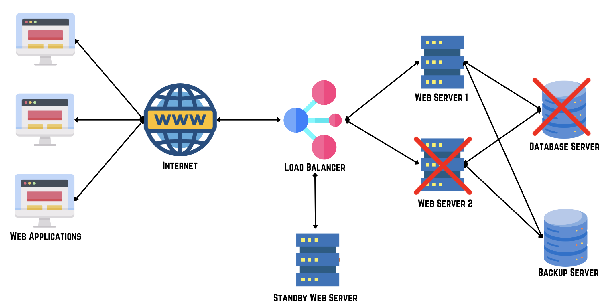
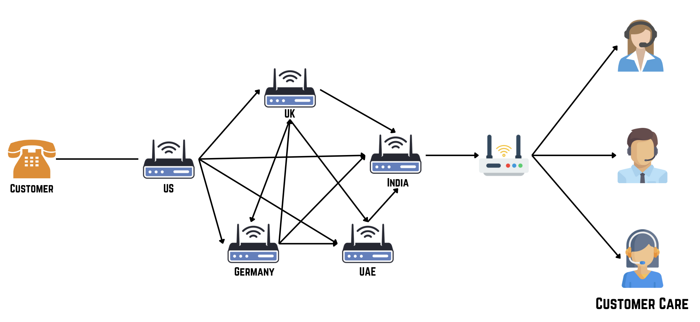
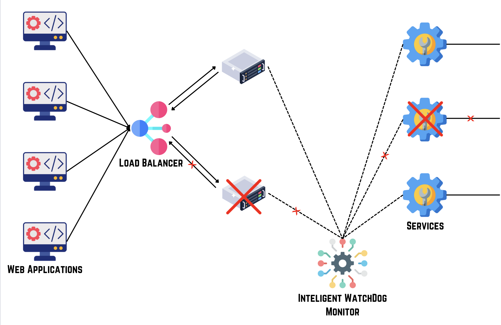
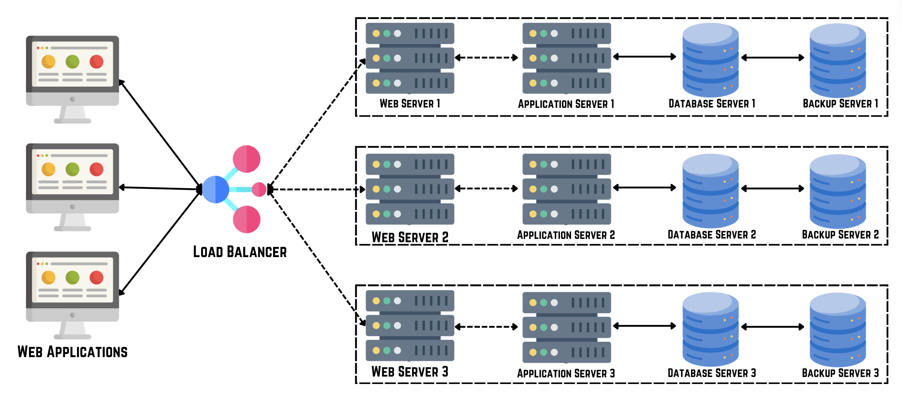

Fault Tolerance
Fault tolerance is a critical aspect of system design that ensures a system remains operational even in the face of hardware or software failures. It involves designing systems with redundancy and resilience mechanisms to minimize downtime, maintain availability, and prevent data loss.

Key Concepts in Fault Tolerance
- Redundancy: Using duplicate components or systems to ensure continuity in case of failure.
- Failover and Recovery: Automatically switching to a redundant or standby system when a failure is detected. Recovery is the processes for restoring system functionality and data integrity after a failure.
- Isolation: Preventing failures from spreading across the system and affecting other components.



Availability vs Fault Tolerance
| Aspect | Availability | Fault Tolerance |
|---|---|---|
| Definition | The measure of the percentage of time a system remains operational under normal conditions. | The ability of a system to remain operational or quickly recover from faults and failures. |
| Focus | Maximizing uptime and minimizing downtime. | Ensuring system reliability and resilience against failures. |
| Goal | To keep the system available and responsive to users. | To maintain system functionality despite hardware or software failures. |
| Components | Redundant components, load balancers, and failover mechanisms. | Redundancy, fault detection, and recovery mechanisms. |
| Example | Using load balancers to distribute traffic and prevent single points of failure. | Implementing data replication across multiple servers to ensure data availability and integrity. |
| Measure | Measured in uptime percentage (e.g., 99.9% uptime). | Measured in recovery time objectives (RTO) and recovery point objectives (RPO). |
| Benefits | Enhanced user experience and consistent service availability. | Improved system reliability, resilience, and data integrity. |
| Challenges | Cost of redundancy and complexity of failover mechanisms. | Managing overhead and complexity of redundancy, detection, and recovery processes. |
Strategies for Fault Tolerance
- Hardware Redundancy: Using redundant hardware components such as servers, power supplies, and storage to eliminate single points of failure.
- Software Redundancy: Implementing redundant software components and services to ensure continuous operation.
- Data Redundancy: Maintaining redundant copies of critical data to prevent data loss in case of storage or database failures.
- Automated Monitoring and Recovery: Implementing automated systems to monitor system health, detect failures, and initiate recovery processes.
Benefits of Fault Tolerance
- High Availability: Ensuring systems are always available for use, even during failures.
- Data Integrity: Preventing data loss or corruption by maintaining redundant copies.
- Business Continuity: Minimizing disruptions and ensuring operations continue uninterrupted.
- Cost Efficiency: Reducing costs associated with downtime and recovery efforts.
Challenges of Fault Tolerance
- Complexity: Designing and maintaining redundant systems can increase complexity and resource requirements.
- Cost: Acquiring and maintaining redundant hardware, software, and infrastructure can be expensive.
- Performance Overhead: Redundancy and failover mechanisms may introduce latency or overhead.
- Testing and Validation: Ensuring that fault tolerance mechanisms work as expected requires thorough testing and validation.
Best Practices for Implementing Fault Tolerance
- Identify Critical Components: Determine which components are critical to system operation and prioritize fault tolerance efforts accordingly.
- Redundancy Planning: Plan for redundancy at all levels, including hardware, software, data, and network infrastructure.
- Automate Recovery Processes: Implement automated recovery processes to minimize downtime and human error.
- Regular Testing: Conduct regular testing and simulations of failure scenarios to validate fault tolerance mechanisms.
Fault tolerance is essential for building resilient and reliable systems that can withstand failures and maintain operational continuity. By implementing robust fault tolerance strategies, organizations can minimize downtime, ensure data integrity, and deliver consistent performance, even in the face of unexpected disruptions.